Agenda, fichas de riesgo, cobros y cuadre del día para empresas de turismo activo.
reservaps
Versión del manual: 18 de octubre de 2026 · Capturas tomadas de la versión de demostración.
Las imágenes salen de la versión de demostración, que usa el rubro parapente: por eso dicen “vuelo”, “piloto” y “pasajero”. En tu empresa esas palabras cambian solas según el rubro — en rafting dirá “bajada”, “guía” y “tripulante”. El funcionamiento es el mismo.
Es la intranet con la que una empresa de turismo activo lleva el día a día: qué sale hoy, quién viene, quién ya pagó, quién firmó su ficha, qué le toca a cada guía y cuánto quedó en caja al final de la jornada. Se abre desde el navegador del teléfono o del computador: no hay nada que instalar.
Cada empresa tiene su propia dirección: tuempresa.<dominio>. Al entrar por esa dirección
el sistema ya sabe de qué empresa se trata, pinta el acceso con su color y su logo, y a partir de ahí
solo muestra los datos de esa empresa. Dos empresas en el mismo sistema nunca se ven entre sí:
la separación está en la base de datos, no en la pantalla.
El sistema se adapta al rubro de cada empresa. No cambia lo que hace: cambia cómo lo llama. Esta es la tabla completa.
| Rubro | La actividad | Quien la guía | Quien participa | Cuando ya ocurrió |
|---|---|---|---|---|
| Parapente | vuelo | piloto | pasajero | voló |
| Rafting | bajada | guía | tripulante | bajó |
| Cabalgatas | cabalgata | arriero | jinete | salió |
| Trekking y montaña | salida | guía | caminante | salió |
| Buceo | inmersión | instructor | buzo | buceó |
| Navegación | zarpe | patrón | tripulante | zarpó |
| Tours y excursiones | tour | guía | pasajero | salió |
| Otra actividad | salida | guía | participante | salió |
El rubro lo elige el administrador del sistema al crear la empresa y se puede cambiar después (capítulo 13). Al cambiarlo, las pantallas empiezan a hablar distinto de inmediato.
Para no repetir ocho veces lo mismo, el texto usa las palabras neutras: salida, guía y cliente. Donde la captura diga “vuelo”, “piloto” o “pasajero”, léelo con el vocabulario de tu rubro.
El acceso está en la dirección de tu empresa. La pantalla lleva su logo y su color: si ves otro color, estás en la empresa equivocada.
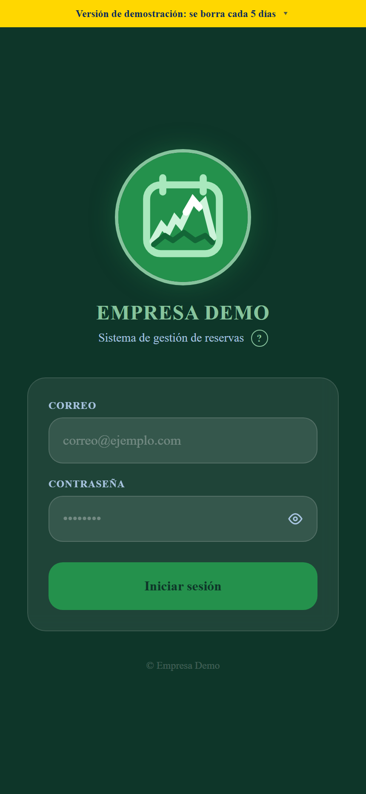
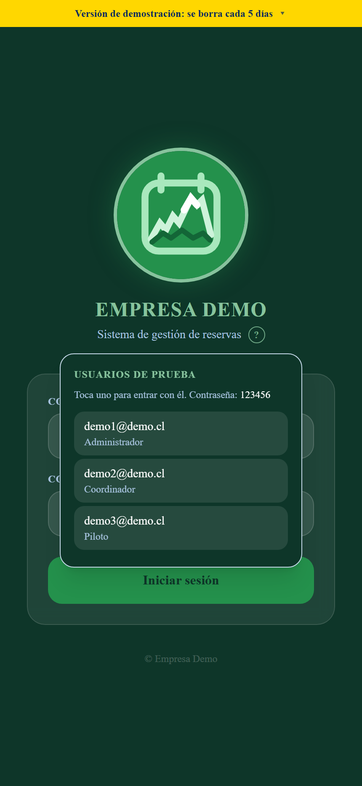
? muestra usuarios de prueba.Estás entrando por el subdominio de otra empresa. Revisa la dirección: debe ser la de la tuya.
Cada usuario tiene uno o más roles. Al crear una empresa nacen tres, y son los que deciden qué se ve:
| Rol | Para quién | Qué ve |
|---|---|---|
| Admin | Dueño, administración | Todo: reservas, guías, usuarios, configuración y cuadre del día. |
| Coordinador | Quien opera la agenda | Reservas, guías, configuración. No ve Usuarios ni Cuadre del día. |
| Guía (piloto, arriero, instructor…) | Quien hace la salida | Lo mismo que el coordinador. Entra a ver su día y sus pagos. |
Coordinador y guía son roles restringidos: el sistema los marca como tales al crearse la empresa, así que la restricción no depende de cómo se llame el rol en cada rubro. Un usuario que tenga solo roles restringidos no ve Usuarios ni Cuadre del día; basta que tenga además un rol no restringido para ver el panel completo.
Puedes agregar los roles que quieras en Varios → Roles (capítulo 9). Los roles que crees ahí nacen sin restricción, es decir, ven el panel completo.
Es la pantalla que aparece al entrar. Arriba, el logo y el nombre de la empresa, tu nombre y el botón de salir. Abajo, una tarjeta por cada parte del sistema.
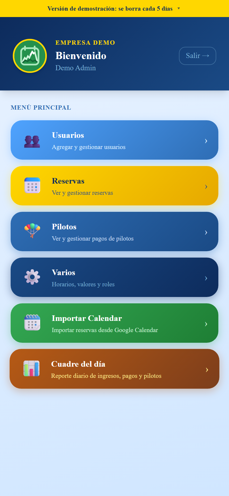
| Tarjeta | Qué hay dentro | Capítulo |
|---|---|---|
| Usuarios | Crear gente, asignar roles, activar o desactivar | 8 |
| Reservas | La agenda y la pestaña del día de operación | 4 y 5 |
| Guías | Lo que hizo cada guía y lo que se le debe | 7 |
| Varios | Horarios, valores, roles, métodos de pago, cobro en línea, Google Calendar y quién hizo qué | 9 |
| Importar Calendar | Traer reservas desde Google Calendar | 11 |
| Cuadre del día | El resumen financiero de la jornada | 10 |
| Panel de empresas | Solo lo ve el administrador del sistema | 13 |
Bajo tu nombre, en la cabecera, hay un enlace a Mi cuenta (dice Cambiar de empresa si trabajas en más de una). Ahí están tus empresas, las invitaciones que recibiste y el interruptor para aparecer o no en el banco de guías. Está en el capítulo 8.
Si a alguien le faltan tarjetas, no es un error: es su rol. Usuarios y Cuadre del día no aparecen para quien tiene solo roles restringidos, y Panel de empresas solo lo ve el administrador del sistema.
En la versión de demostración hay un aviso arriba: “Versión de demostración: se borra cada 5 días”. En una empresa real no existe. Lo que se carga en la demo se borra solo a los cinco días, a las 07:00, incluidos reservas, pagos, fichas y gastos; los catálogos y los usuarios de prueba se quedan.
Es el corazón del sistema. Tiene dos pestañas: Agenda, que es el listado por días, y Hoy, que es el paso a paso de la jornada (capítulo 5).
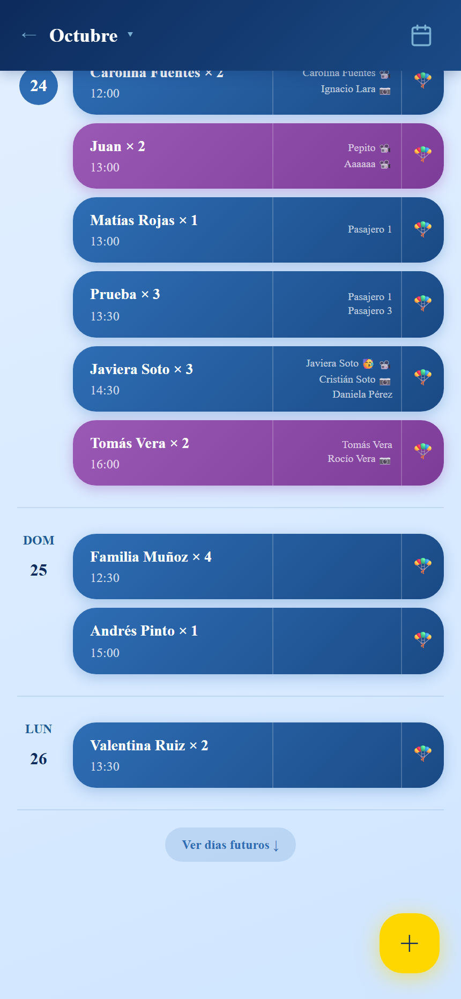
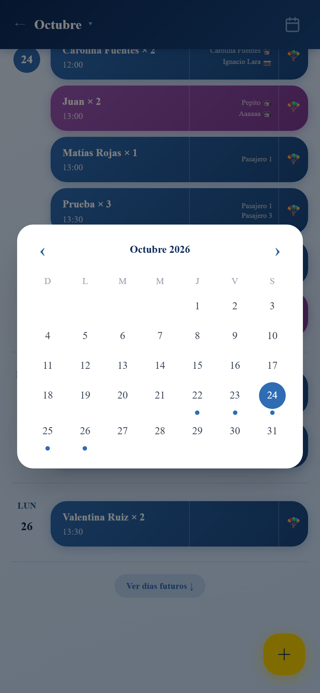
La agenda abre en el día de hoy y muestra dos días antes y dos después. Con ↑ Ver días anteriores y Ver días futuros ↓ se agregan días a la lista, de dos en dos. Para saltar a una fecha lejana, abre el calendario con el ícono de arriba a la derecha y toca el día: los días con reservas llevan un punto debajo.
Tocando la tarjeta se abre el detalle: en el teléfono como pantalla completa, en el computador como ventana.
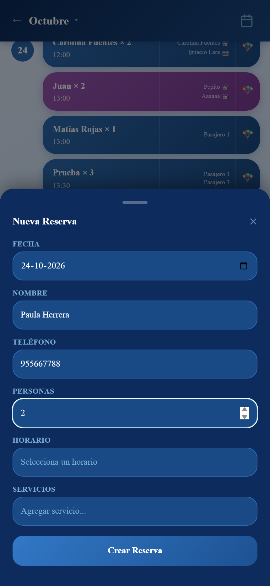
Basta el nombre de quien reserva y cuántos vienen. Los datos de cada cliente llegan solos cuando cada uno firma su ficha, o se cargan a mano en el detalle.
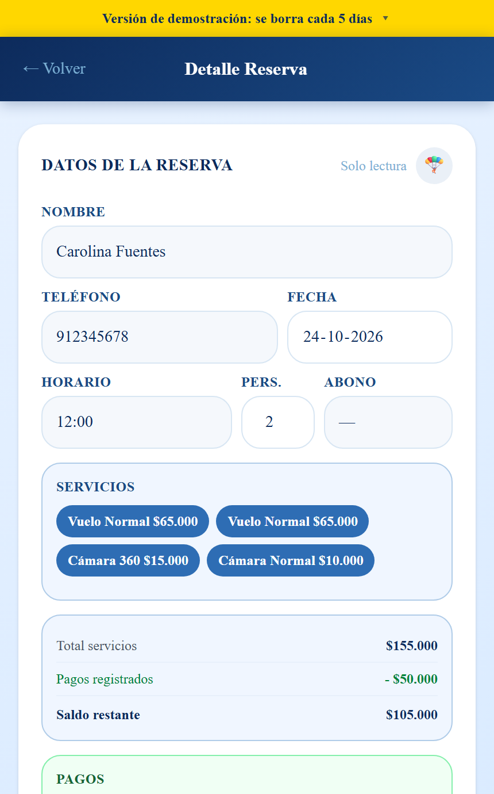
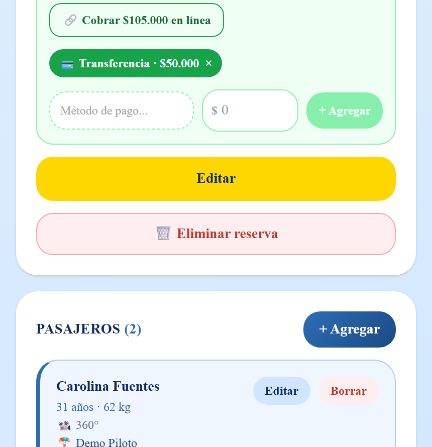
El detalle abre en solo lectura: para cambiar algo hay que tocar Editar abajo, modificar y Guardar cambios. Es a propósito, para que nadie cambie una reserva sin querer mientras la consulta.
Cada servicio agregado suma al total. Los valores marcados como descuento (en rojo) restan. Se agregan en modo edición, uno por unidad: dos salidas iguales son dos veces el mismo servicio.
Es el cuadro azul con la cuenta completa, en este orden:
| Línea | Qué es |
|---|---|
| Total servicios | La suma de todo lo que no es descuento. |
| Descuentos | Lo que restan los valores marcados como descuento. |
| Abono | Lo que el cliente pagó antes, por fuera del sistema (se escribe a mano en el campo Abono). |
| Pagos registrados | La suma de los pagos cargados con método de pago. |
| Saldo restante | Lo que todavía falta. En verde cuando llega a cero o menos. |
En el cuadro verde: se elige el método de pago, se escribe el monto y se toca + Agregar. Cada pago queda como una etiqueta verde que se puede borrar con su ×. Se pueden registrar varios pagos parciales y de distintos métodos sobre la misma reserva.
Si la empresa conectó Mercado Pago (capítulo 9), aparece el botón 🔗 Cobrar $… en línea, que genera un link de pago por el saldo exacto. Desde ahí se copia o se manda por WhatsApp. Cuando el cliente paga, el pago se registra solo en la reserva.
Abajo del todo, 🗑️ Eliminar reserva borra la reserva y todo lo que cuelga de ella: pagos, servicios, clientes y fichas. Pide confirmación y no se puede deshacer. Solo lo ve el administrador.
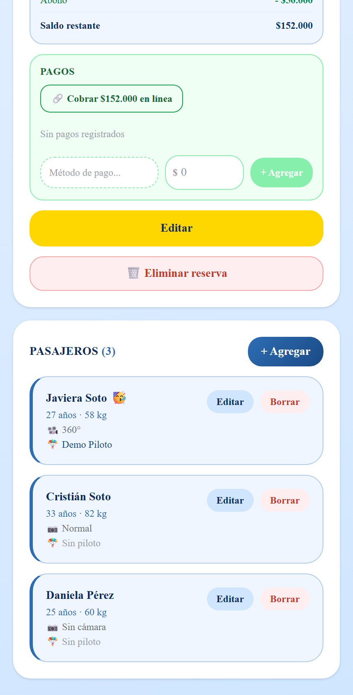
Más abajo en el detalle está la lista de clientes. Con + Agregar se carga uno a mano:
Si agregas más clientes de los que decía la reserva, el sistema sube el número de personas. Nunca lo baja solo: si alguien se cae de la salida, corrígelo a mano.
La pestaña Hoy es la pantalla para usar en terreno. Muestra solo las salidas de hoy, ordenadas por hora, y para cada una los cinco pasos que hay que completar antes de cerrarla.
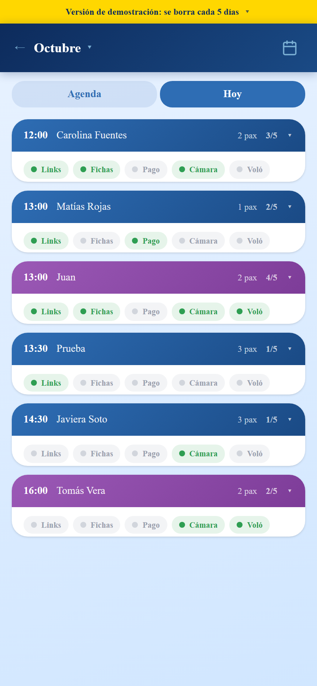
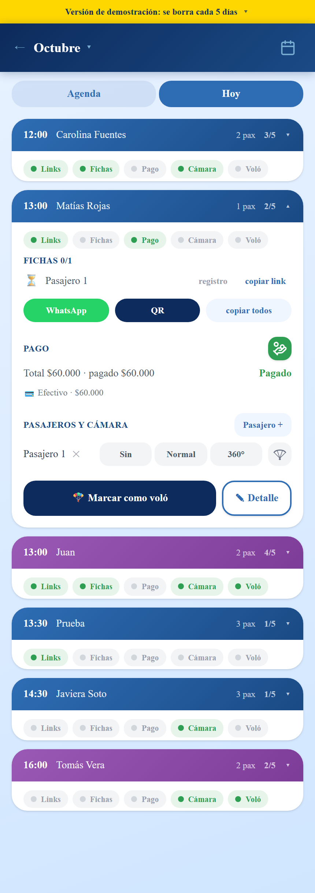
| Paso | Se marca verde cuando… |
|---|---|
| Links | …se generaron los links de ficha de la reserva. |
| Fichas | …todas las fichas están firmadas. |
| Pago | …el saldo llega a cero (hay servicios cargados y está todo cobrado). |
| Cámara | …todos los clientes tienen su opción de cámara elegida. |
| Salió / Voló | …se marcó que la salida ya ocurrió. |
Con los cinco listos la tarjeta se pone verde y dice ✓ Todo listo. La pantalla se refresca sola cada quince segundos, así que cuando un cliente firma desde su teléfono, el estado cambia sin que haya que recargar.
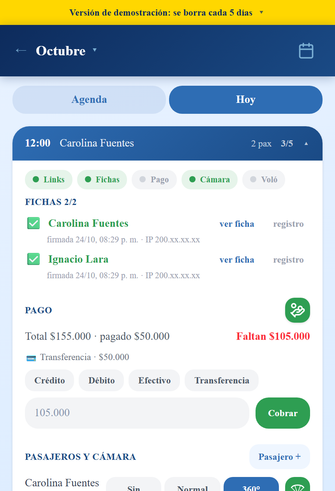
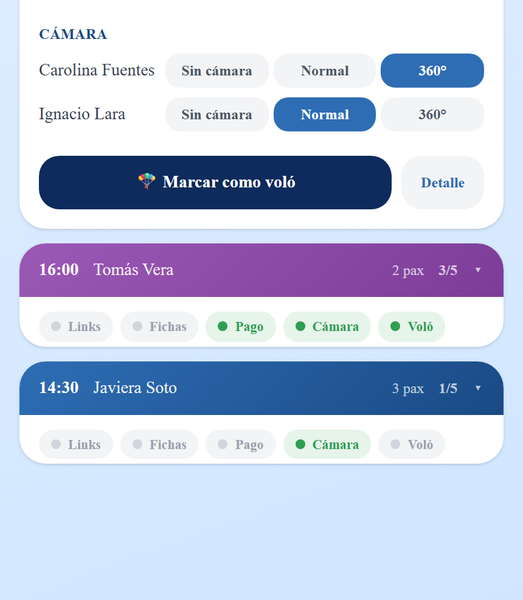
Muestra total, pagado y lo que falta. Para cobrar: se toca el método, se escribe el monto (viene propuesto el saldo) y se confirma con Cobrar. Si la reserva no tiene servicios cargados, avisa que hay que agregarlos en el detalle.
Una fila por cliente con tres botones: Sin cámara, Normal y 360°. Es excluyente. Los clientes aparecen acá cuando firman su ficha o cuando se cargan a mano en el detalle.
Marcar como salió cierra la salida (y vuelve a abrirla si se tocó por error). Detalle lleva a la reserva completa, por si falta cargar un servicio o corregir un dato.
Generar links → mandarlos por WhatsApp apenas confirmen → revisar que firmen antes de llegar → cobrar el saldo en la base → marcar cámaras → marcar la salida como realizada.
Es la ficha de inscripción y aceptación del riesgo que antes se firmaba en papel. Ahora la llena el propio cliente desde su teléfono, con un link personal, y queda guardada con evidencia de quién la firmó, cuándo y desde dónde.
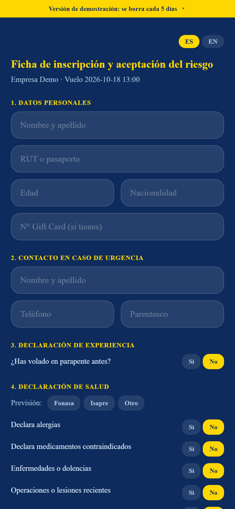
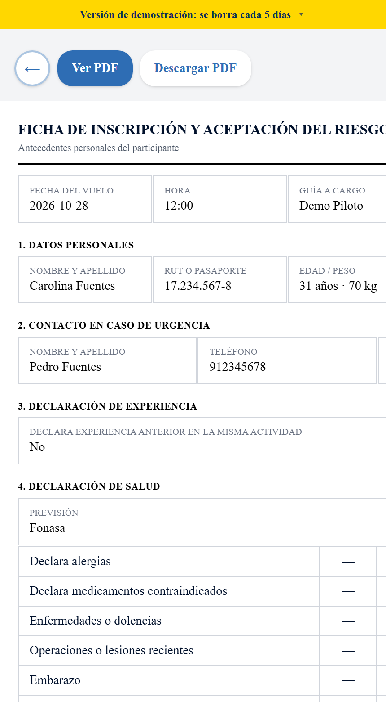
Cada ficha tiene su propia dirección, con un código único y el nombre de la persona al final para reconocerla al compartirla:
https://tuempresa.<dominio>/ficha/86dd4f.../juan-perez
El link se abre sin cuenta ni contraseña: el cliente no es usuario del sistema. Es personal: cada persona de la reserva tiene el suyo y firma por sí misma.
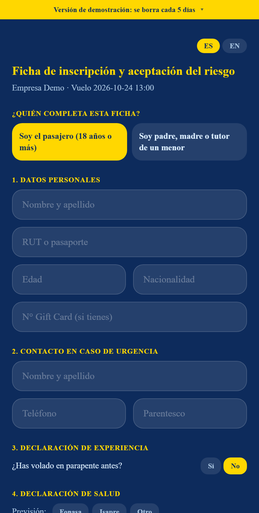
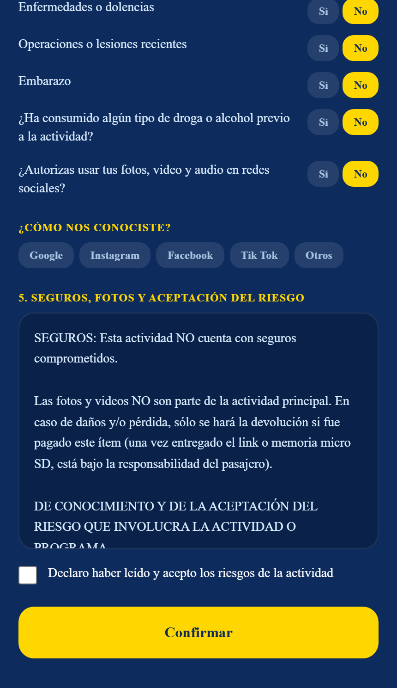
La ficha está en español e inglés: el cliente cambia con los botones ES / EN de arriba. Si la edad es menor de 18, aparecen además los campos del tutor, que son obligatorios.
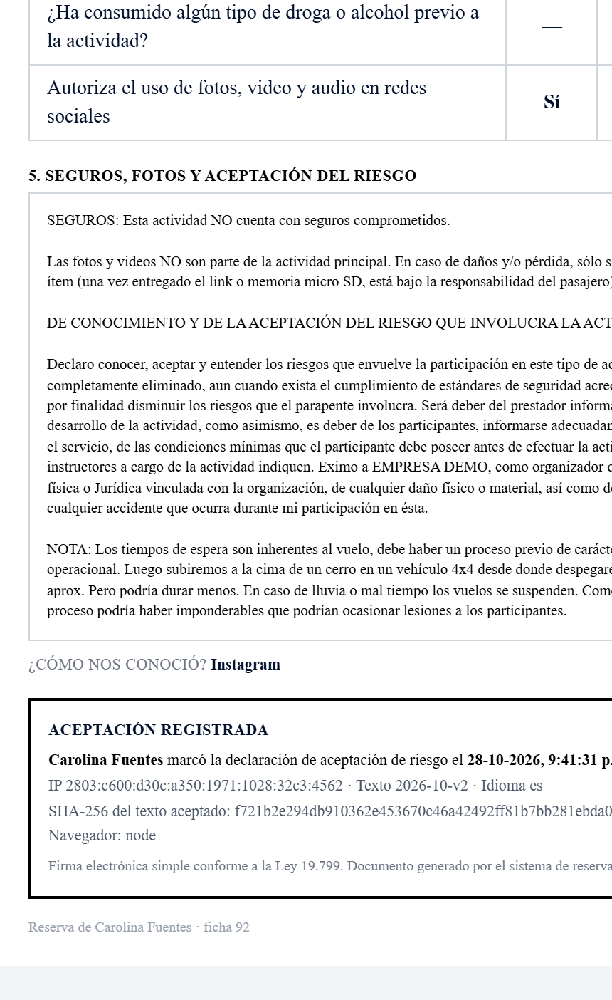
Al confirmar, el servidor guarda —además de las respuestas— la evidencia de la firma:
Además se registra cada intento, firmado o fallido, con su motivo. Eso es lo que muestra el botón registro en la pestaña Hoy.
La ficha cumple con el deber de informar el riesgo del D.S. 19, artículo 34, y la casilla marcada equivale a firma según la Ley 19.799 de firma electrónica — por eso se guarda la evidencia. Las fichas se conservan dos años, como exige el reglamento: no las borres antes, y recuerda que eliminar una reserva elimina también sus fichas.
Los links se generan desde la pestaña Hoy (botón Generar N links). Si las reservas llegan por la API desde tu página web, los links vienen de vuelta en la respuesta y se mandan directamente al cliente al momento de la compra (capítulo 12).
Cuando alguien firma, el sistema crea o completa a esa persona en la reserva con el nombre y la edad que escribió. Por eso no hace falta cargar los nombres a mano cuando las fichas se mandan a tiempo.
La tarjeta Guías del menú responde dos preguntas por día: qué hizo cada guía y cuánto se le debe.
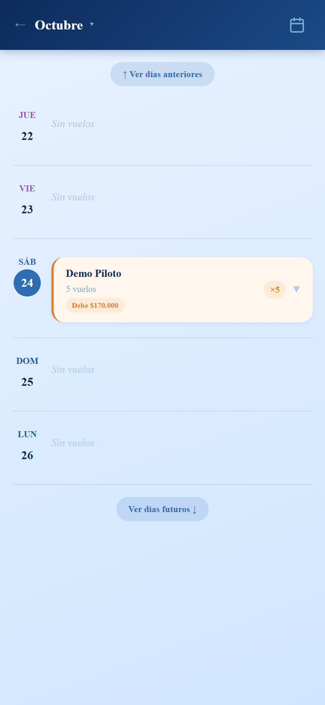
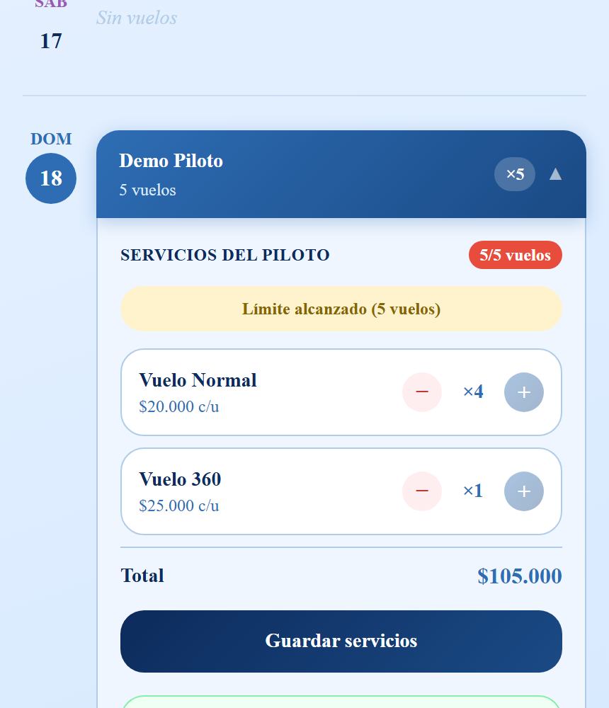
Un guía aparece en un día porque está asignado a algún cliente de ese día (se asigna en el detalle de la reserva, capítulo 4.4). El número al lado de su nombre es la cantidad de clientes que llevó.
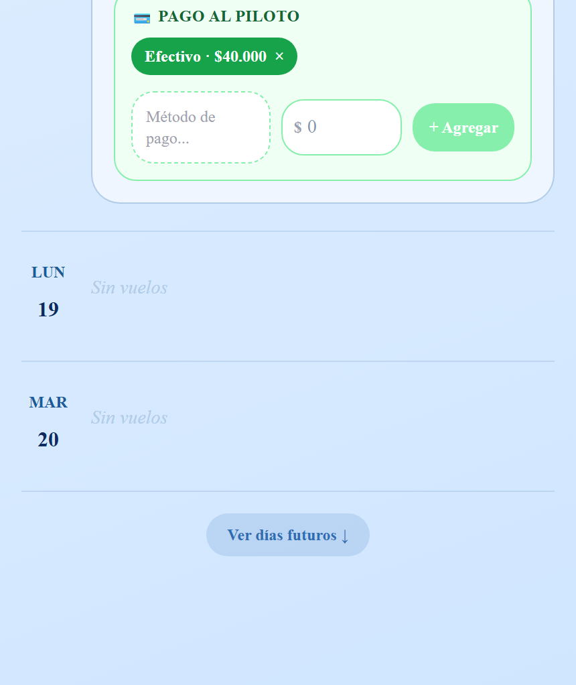
Deuda = suma de los servicios del guía (valor × cantidad). Pagado = suma de los pagos de ese día. La diferencia es lo que queda debiéndose, y es lo que aparece en el cuadre del día.
Igual que en la agenda, se navega por días: el calendario de arriba marca con un punto los días que tuvieron guías asignados.
Acá se crea la gente que entra al sistema. Solo lo ve quien tenga un rol no restringido (normalmente Admin).
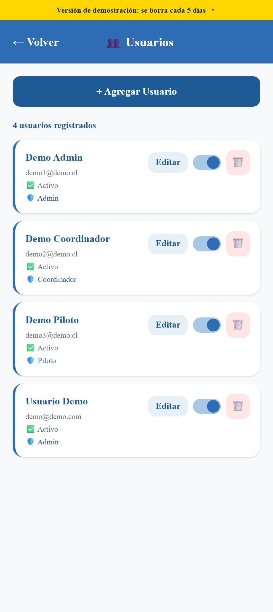
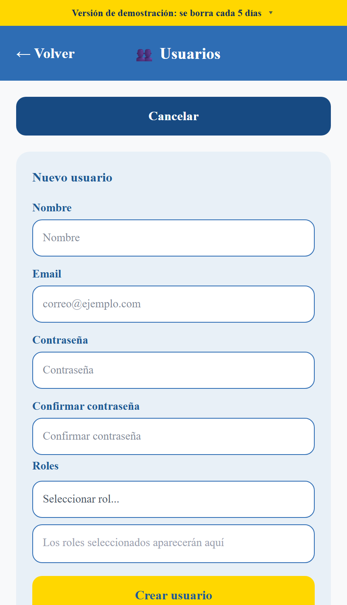
Puede que esa persona ya tenga cuenta porque vuela para otra empresa. En ese caso el sistema no crea una cuenta nueva: la agrega a la tuya con la contraseña que ya usaba. La que escribiste se ignora, y el aviso te lo dice. Tampoco se le cambia el nombre: el suyo es suyo, no de la empresa.
Un usuario sin ningún rol ve el panel completo (el sistema solo restringe a quien tiene únicamente roles restringidos). Asigna siempre el rol que corresponde.
Pasa seguido: el mismo guía trabaja para dos o tres operadores. No necesita una cuenta por empresa. Entra siempre con el mismo correo y la misma contraseña, y cada empresa ve solo lo suyo.
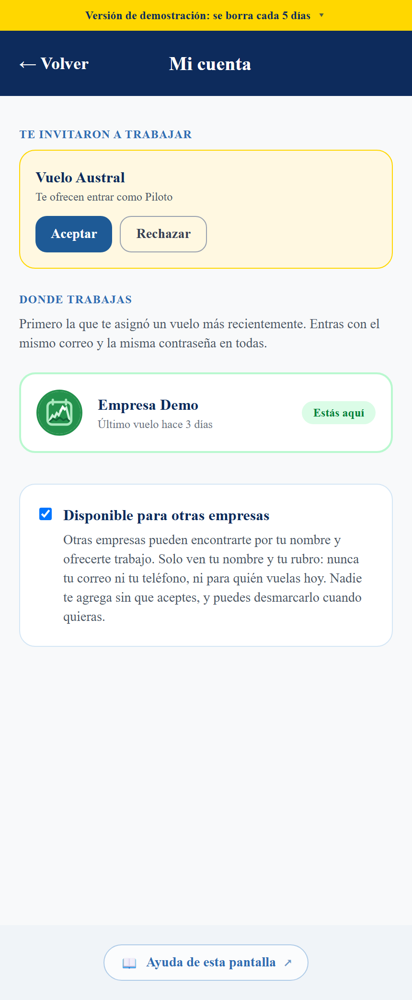
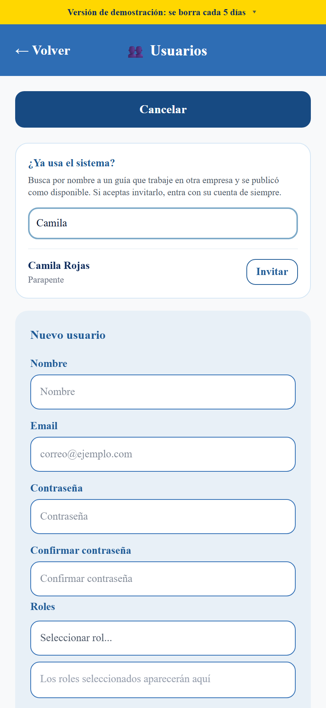
Cada guía llega a esa pantalla desde el enlace Mi cuenta (o Cambiar de empresa, si ya trabaja en varias) que está en la cabecera del menú principal, bajo su nombre. Ahí ve:
Un guía puede publicarse para que otras empresas lo encuentren y le ofrezcan trabajo. Viene apagado: el que no lo enciende es invisible, y nadie puede encenderlo por él.
Del guía publicado, una empresa ve su nombre y su rubro. Nada más. Ni el correo, ni el teléfono, ni para qué empresas vuela hoy. La búsqueda pide al menos tres letras del nombre, así que tampoco sirve para listar a todo el mundo.
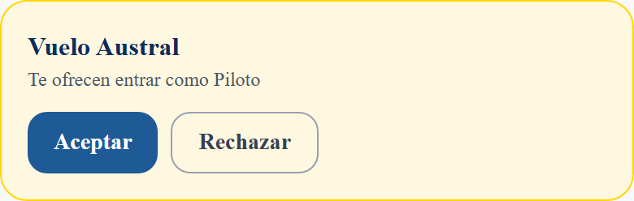
La invitación por sí sola no mete a nadie en tu equipo: hace falta que el guía la acepte. Mientras no responda, no aparece en tus usuarios ni se le pueden asignar vuelos. Es a propósito: nadie entra a trabajar a una empresa sin enterarse.
Las empresas de un guía están aisladas entre sí. Si vuela para dos, ninguna de las dos sabe de la otra: no ven sus vuelos, ni sus pagos, ni siquiera que existe esa otra empresa. Y el guía, por su parte, solo ve de cada empresa lo que su rol le permite.
Todo lo que el sistema usa como lista desplegable se configura acá. Vale la pena dejarlo listo el primer día: después casi no se toca.
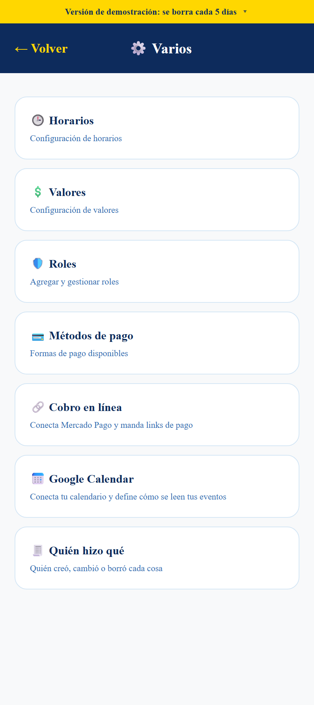
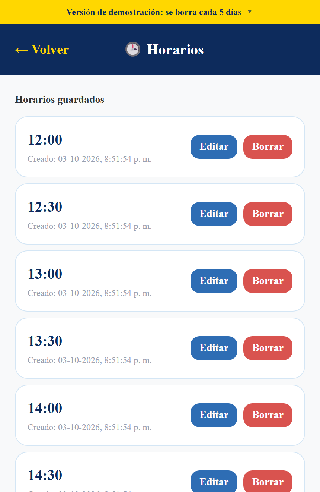
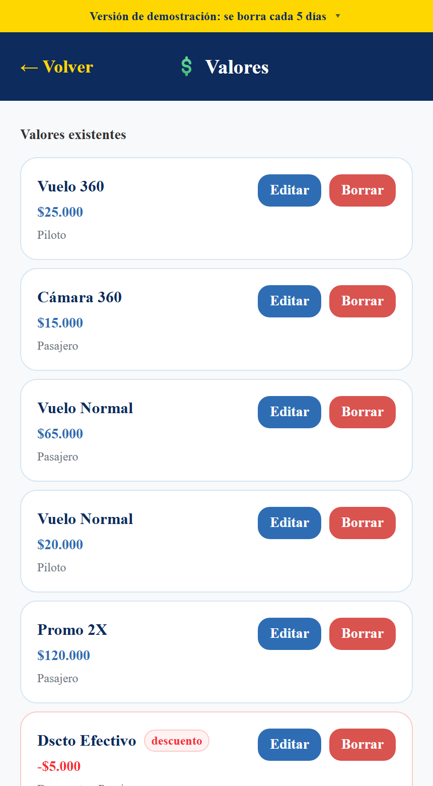
Son las horas de salida que aparecen al crear una reserva. Se agregan eligiendo hora y minutos, se editan tocándolos y se borran con su botón. Si un horario ya está usado por reservas, conviene no borrarlo.
Es la lista de precios. Cada valor tiene nombre, monto y tres interruptores que definen para qué sirve:
| Interruptor | Qué significa |
|---|---|
| Aplica a guía | Es lo que se le paga al guía por salida. Aparece en la pantalla de Guías. |
| Aplica a pasajero | Es lo que se le cobra al cliente. Aparece en el detalle de la reserva. |
| Es descuento | En vez de sumar, resta del total. Se muestra en rojo. |
Un mismo nombre puede existir dos veces con montos distintos: uno para el cliente y otro para el guía. Es lo normal, por ejemplo, con la salida estándar.
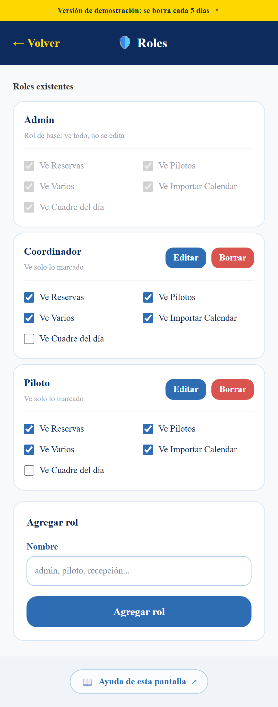
Se agregan, se renombran y se borran. Un rol asignado a alguien no se puede borrar: primero hay que quitárselo a esos usuarios.
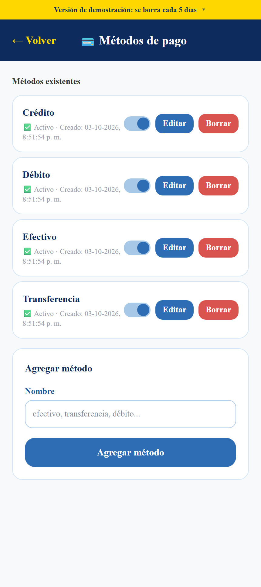
Efectivo, transferencia, débito, crédito, o los que uses. Se pueden desactivar sin borrarlos: dejan de ofrecerse al cobrar, pero los pagos antiguos conservan su método. Son también las columnas del desglose del cuadre del día.
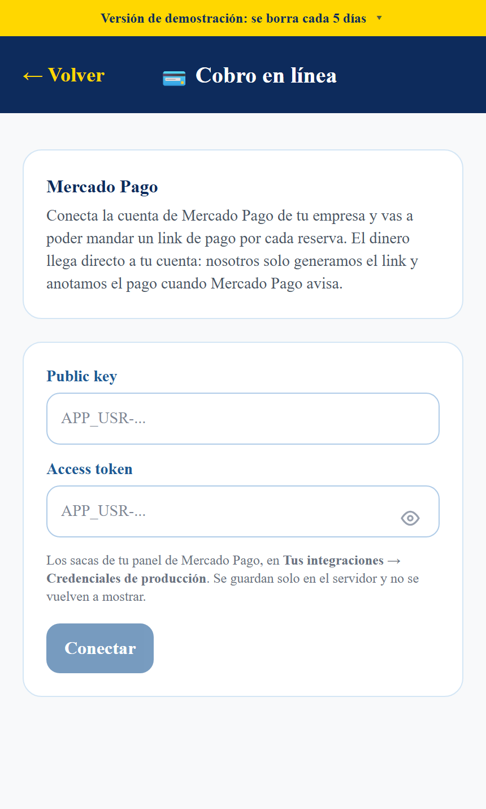
El dinero llega directo a la cuenta de la empresa: el sistema solo genera el link y registra el pago cuando Mercado Pago avisa que se pagó. Ese aviso es automático y no duplica pagos aunque llegue dos veces.
El cobro en línea está implementado de punta a punta, pero todavía no se ha probado con credenciales reales de Mercado Pago. Antes de usarlo con clientes, haz una prueba con credenciales de prueba y verifica que el pago aparezca registrado en la reserva.
El sistema anota solo cada cosa que se crea, se cambia o se borra, con el nombre de quién lo hizo y a qué hora. Sirve para la pregunta incómoda de siempre: ¿quién le cambió la cantidad a esta reserva?, ¿quién registró este pago que no cuadra?
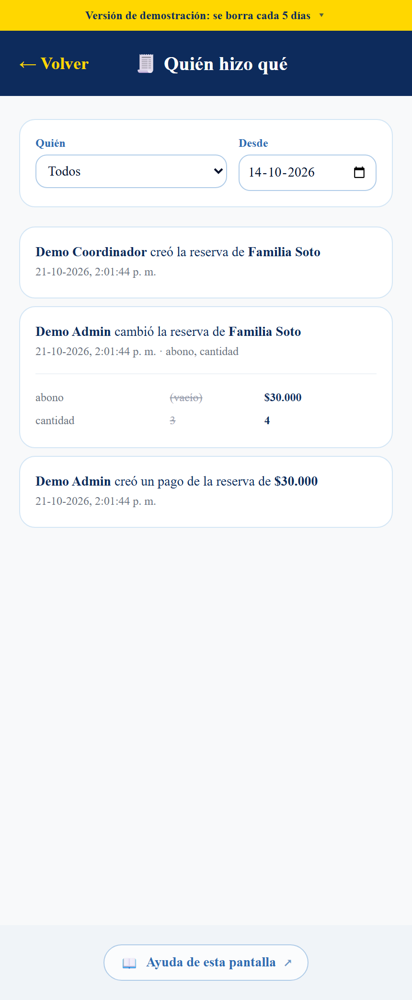
Se filtra por persona y por fecha. Al tocar una línea de cambio se ve campo por campo el valor anterior y el nuevo: en el ejemplo, el abono pasó de vacío a $30.000 y la cantidad de 3 a 4 pasajeros.
Queda registro de las reservas, los pagos, los servicios, los pasajeros, los pagos a guías, los gastos, las fichas y los cambios de rol. Esto último responde un caso que aparece seguido: a un guía lo dejan de coordinador un par de semanas y después vuelve a su rol. Sus permisos cambian de inmediato, pero queda anotado desde cuándo y hasta cuándo tuvo cada rol, y todo lo que hizo en ese tiempo.
Solo quien administra la empresa, normalmente el rol Admin. Un guía o un coordinador no ven esta pantalla ni sus datos. Y lo que entra por la API de integración o por el aviso de pago de Mercado Pago aparece como El sistema, porque ahí no hay una persona detrás.
El registro lo escribe la base de datos, no las pantallas, así que no hay forma de hacer un cambio que no quede anotado. Nadie —tampoco el administrador— puede borrar una línea desde el sistema.
El resumen financiero de una jornada, pensado para cerrar la caja. Solo lo ve quien tenga rol no restringido. Arriba se cambia de día con las flechas o se vuelve a hoy con el botón Hoy.
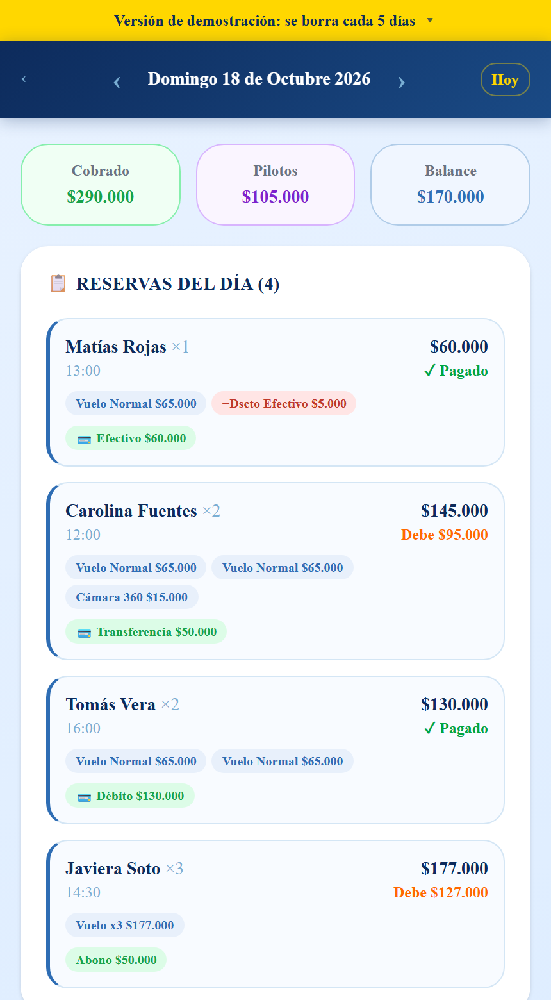
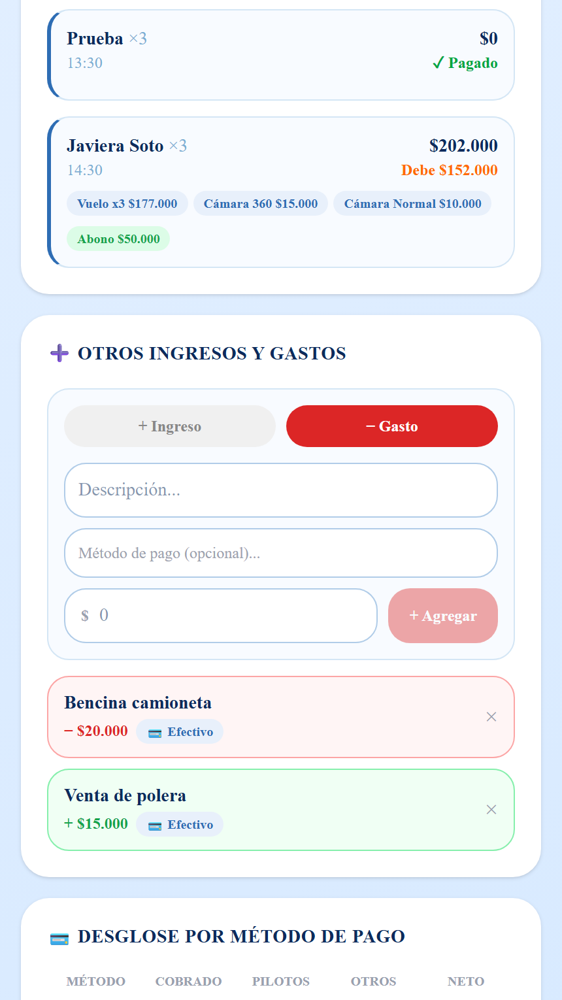
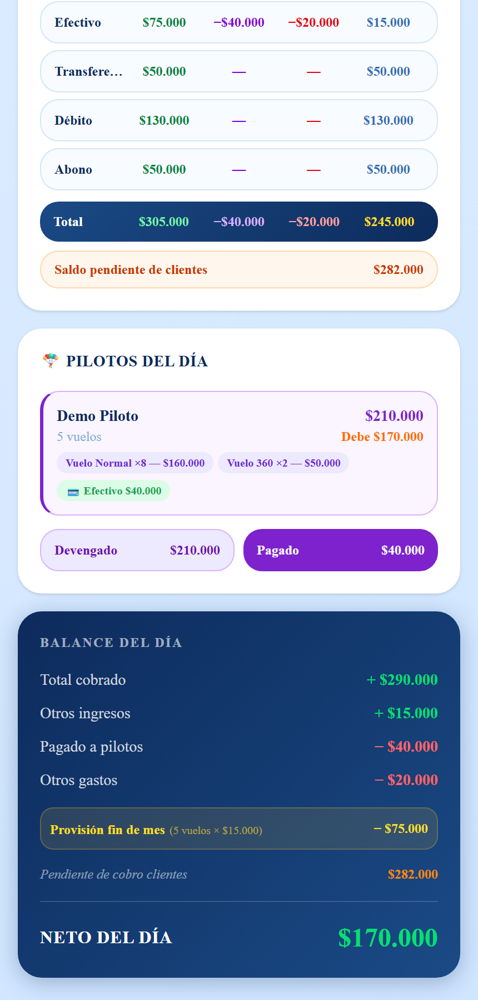
Neto del día = total cobrado + otros ingresos − pagado a guías − otros gastos − provisión de fin de mes
El saldo pendiente de clientes se muestra aparte, en gris: es plata que aún no entra, así que no suma al neto.
Es una reserva de dinero por cada salida realizada, para los pagos que se hacen a fin de mes. Hoy está fija en $15.000 por salida dentro del sistema: no se configura desde la pantalla. Si tu empresa usa otro valor, hay que cambiarlo en el código.
Sirve para empresas que todavía agendan en Google Calendar: trae los eventos de un día y los convierte en reservas, sin volver a escribirlas.
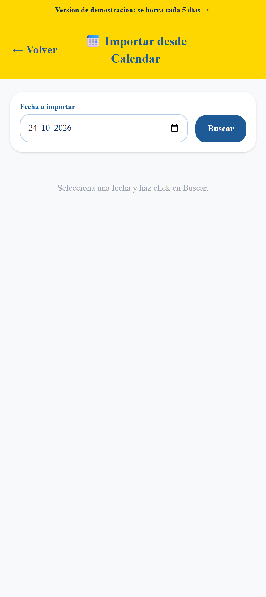
Un evento ya importado no se duplica: el sistema recuerda cuál evento de Calendar generó cuál reserva.
La importación necesita que la empresa tenga configuradas sus credenciales de Google
(GOOGLE_CLIENT_ID, GOOGLE_CLIENT_SECRET y GOOGLE_REDIRECT_URI).
Hoy no están configuradas, así que la pantalla existe pero no trae eventos hasta que se conecten.
No afecta al resto del sistema.
Permite que la página web de la empresa cree la reserva sola cuando un cliente compra y paga en línea: la reserva aparece en la agenda, con su pago registrado, y los links de ficha vuelven listos para mandárselos al cliente en el mismo correo de confirmación.
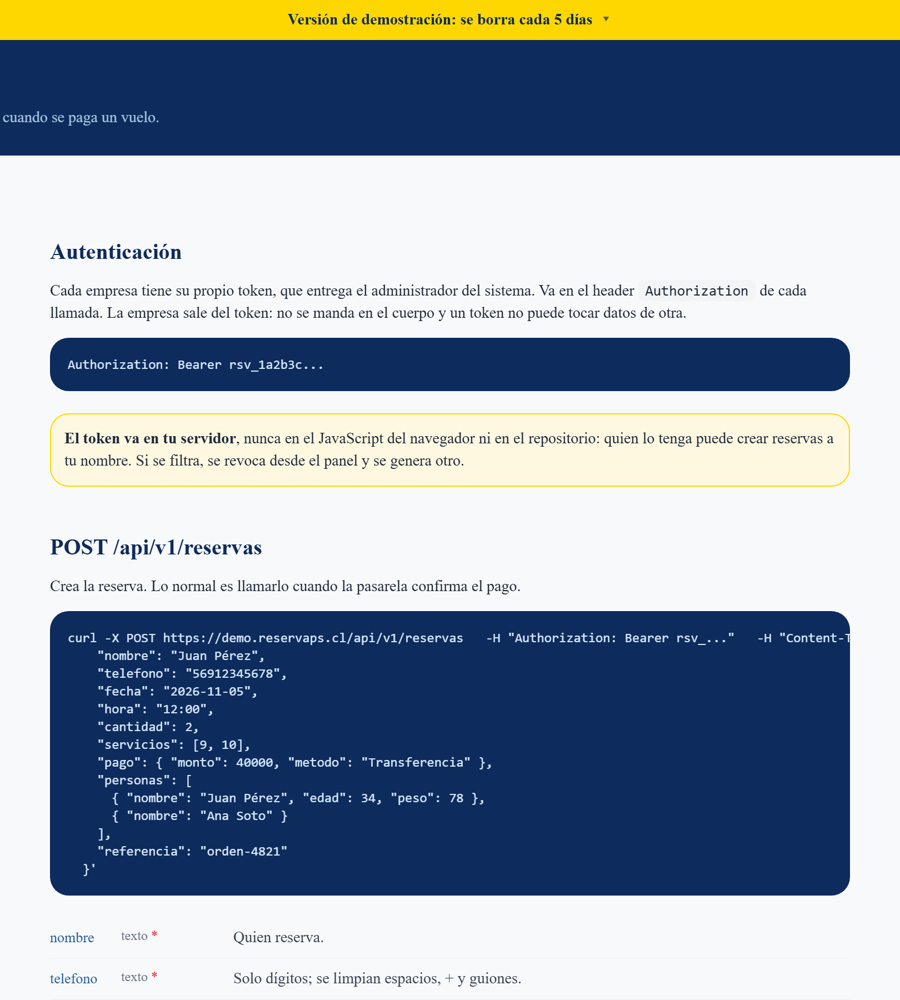
/docs/api: se abre sin cuenta, para que la lea quien programe la web.Cada empresa tiene su propio token, que entrega el administrador del sistema desde el panel de empresas. Va en la cabecera de cada llamada:
Authorization: Bearer rsv_1a2b3c...
La empresa sale del token: no se manda en el cuerpo y un token nunca puede tocar datos de otra empresa. El token se muestra una sola vez al crearlo. Si se pierde o se filtra, se revoca y se genera otro.
En el servidor de tu web, nunca en el JavaScript del navegador ni en el repositorio de código: quien lo tenga puede crear reservas a tu nombre. La API no habilita CORS justamente para eso.
POST /api/v1/reservas
{
"nombre": "Juan Pérez",
"telefono": "56912345678",
"fecha": "2026-11-05",
"hora": "12:00",
"cantidad": 2,
"servicios": [9, 9],
"pago": { "monto": 40000, "metodo": "Transferencia" },
"personas": [
{ "nombre": "Juan Pérez", "edad": 34, "peso": 78 },
{ "nombre": "Ana Soto" }
],
"referencia": "orden-4821"
}
| Campo | Obligatorio | Qué es |
|---|---|---|
nombre | Sí | Quien reserva. |
telefono | Sí | Solo dígitos; se limpian espacios, + y guiones. |
fecha | Sí | Día de la salida, YYYY-MM-DD. |
hora | Sí | Uno de los horarios de la empresa, HH:MM. Alternativa: horario_id. |
cantidad | Sí | Cuántas personas. |
servicios | No | Un id por unidad: dos salidas iguales son [9, 9]. |
pago | No | monto y metodo con el nombre exacto de un método de la empresa. |
personas | No | Nombre, edad y peso de cada cliente. |
referencia | No | Tu número de orden. Repetirla no duplica la reserva. |
La respuesta trae el id de la reserva y un link de ficha por persona, listo para mandar:
{
"id": 65,
"creada": true,
"fichas": [
{ "nombre": "Juan Pérez", "url": "https://tuempresa.../ficha/86dd.../juan-perez" },
{ "nombre": "Ana Soto", "url": "https://tuempresa.../ficha/4687.../ana-soto" }
]
}
GET /api/v1/catalogo devuelve los horarios, servicios y métodos de pago de la empresa,
para armar el formulario de la web con datos siempre al día.
| Código | Qué pasó |
|---|---|
| 401 | Token ausente, revocado o inválido. |
| 400 | Falta un dato, o el horario / servicio / método no existe en esa empresa. El mensaje dice cuáles sí existen. |
| 500 | Error del sistema. Se puede reintentar con la misma referencia: no se duplica nada. |
La documentación completa, siempre actualizada, está en /docs/api de la dirección de la empresa.
Es la pantalla del administrador del sistema (quien provee el servicio), no de las empresas clientes.
Vive en su propia dirección —admin.<dominio>— y solo entra ahí ese usuario:
cualquier otro recibe un rechazo aunque tenga cuenta válida.
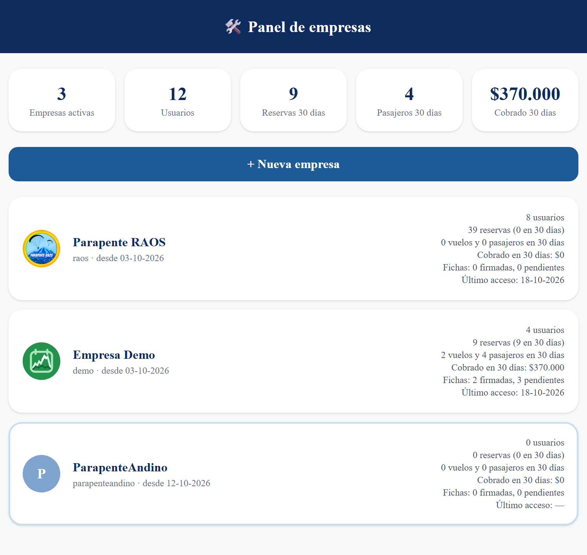
Al crearse la empresa nacen sus tres roles: Admin, el del guía según el rubro, y Coordinador; los dos últimos, restringidos.
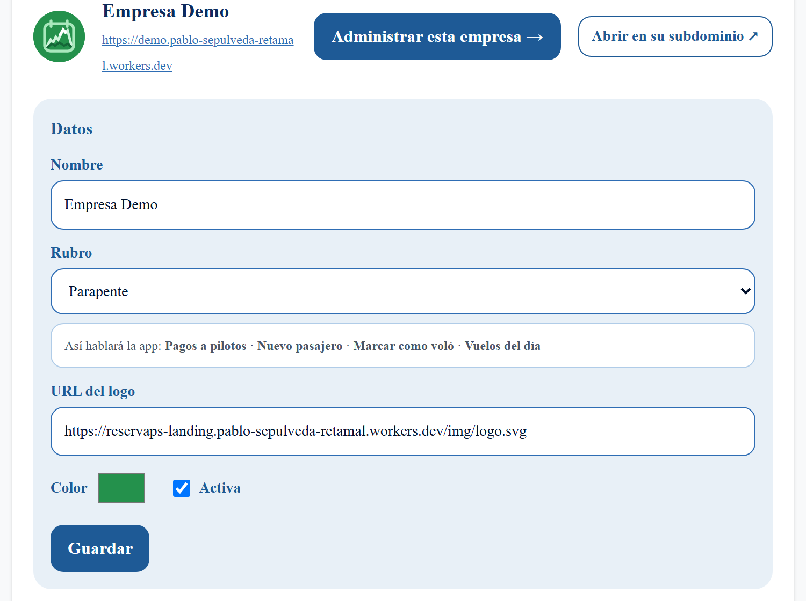
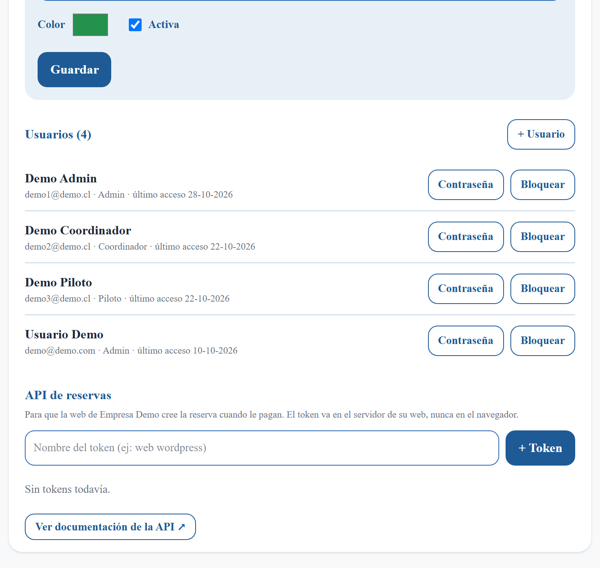
Dos botones:
Mientras se está administrando una empresa, una franja amarilla lo recuerda arriba de la pantalla, con un link para volver al panel.
Desde el mismo detalle se cambian nombre, rubro, logo, color y si está activa. Desactivarla es la forma de suspender a un cliente sin borrar su información.
Es el rol. Usuarios y Cuadre del día no se muestran a quien tiene solo roles restringidos (coordinador y guía). Pídele a un administrador que revise tus roles.
Revisa que sea el link completo y que la ficha no haya sido eliminada junto con la reserva. Si el link se perdió, en la pestaña Hoy se puede copiar de nuevo o reenviarlo por WhatsApp.
La pantalla se refresca sola cada quince segundos. Si igual no aparece, abre registro en esa ficha: ahí quedan los intentos fallidos con su motivo.
Sí. Se registran tantos pagos como haga falta, con métodos distintos, y el saldo se va ajustando solo.
Dos opciones: registrarlo como pago con método Transferencia, o escribirlo en el campo Abono del detalle. Ambas restan del saldo; el pago con método además aparece en el desglose del cuadre del día.
Se desmarca con el mismo botón, tanto en la agenda como en la pestaña Hoy.
Sí. Las pantallas están pensadas para el teléfono, pero funcionan igual en el computador; el detalle de reserva se abre como ventana en vez de pantalla completa.
| Tema | Situación |
|---|---|
| Cobro en línea | Implementado, pero sin una vuelta completa probada con credenciales reales de Mercado Pago. |
| Importar Calendar | Faltan las credenciales de Google. La pantalla existe y no trae eventos hasta configurarlas. |
| Provisión de fin de mes | Fija en $15.000 por salida dentro del código; no se configura desde la aplicación. |
| Marcar restringido un rol nuevo | Los roles creados desde Varios nacen sin restricción; marcarlos como restringidos hoy requiere tocar la base de datos. |
| Eliminar una reserva | Borra también sus fichas firmadas. Como las fichas deben conservarse dos años, elimina solo reservas que nunca ocurrieron. |
La demo sirve para probar y para enseñarle el sistema a alguien: se puede cargar lo que sea, porque todo lo que tenga más de cinco días se borra solo cada mañana. Las capturas de este manual se tomaron ahí.
Manual del sistema de reservas reservaps · 18 de octubre de 2026